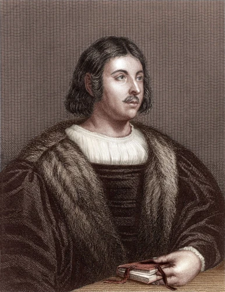

Giovanni Boccaccio
1313 - 1375

- Florenťan
- syn florentského obchodníka
- přítel Petrarky
- učenec, spisovatel, diplomat
- věnoval se konkrétnímu světu lidí: radosti, rozkoše, těžkosti
- autor díla Život Dantův
- Dekameron, Filostrato, Teseida, Nymfa Fiesolská, O nešťastných osudech slavných mužů, Život Dantův, Milostný sen
Boccaccio se narodil v roce 1313 ve Florencii nebo v Certaldu jako nemanželský syn florentského kupce. Část svého mládí strávil v Neapoli, kde studoval právo a obchod, ale brzy se začal věnovat literatuře. Prostředí neapolského dvora, jeho kultura a kontakty s intelektuálními kruhy významně ovlivnily jeho dílo.
V jeho životě hrála důležitou roli žena, kterou v dílech označuje jako Fiammetta. Její identita není jasná, ale předpokládá se, že mohla být dámou u dvora, která inspirovala mnoho jeho raných děl.
Boccaccio byl obdivovatelem Danta Alighieriho a významně přispěl k jeho popularizaci, například tím, že napsal jeho první životopis. Přátelství s básníkem Francescem Petrarcou také ovlivnilo jeho literární směřování.